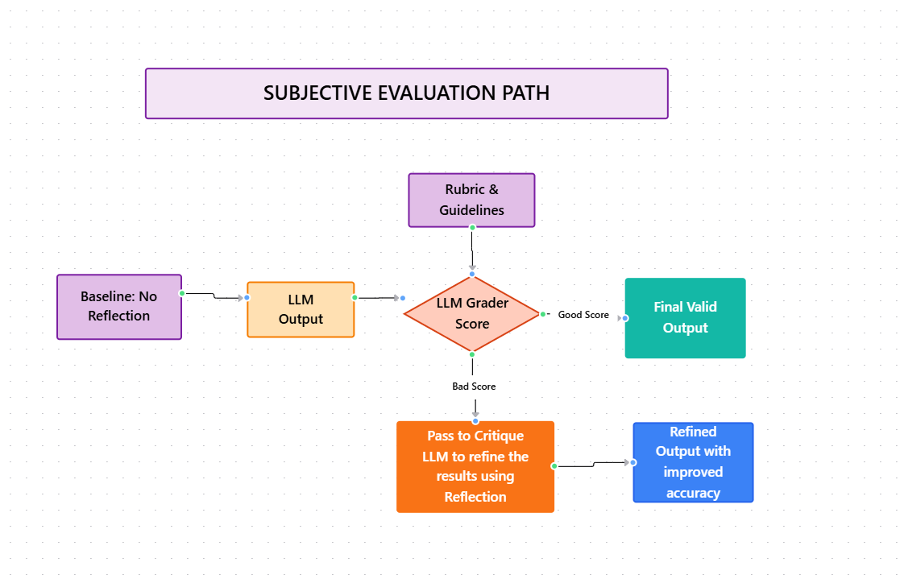
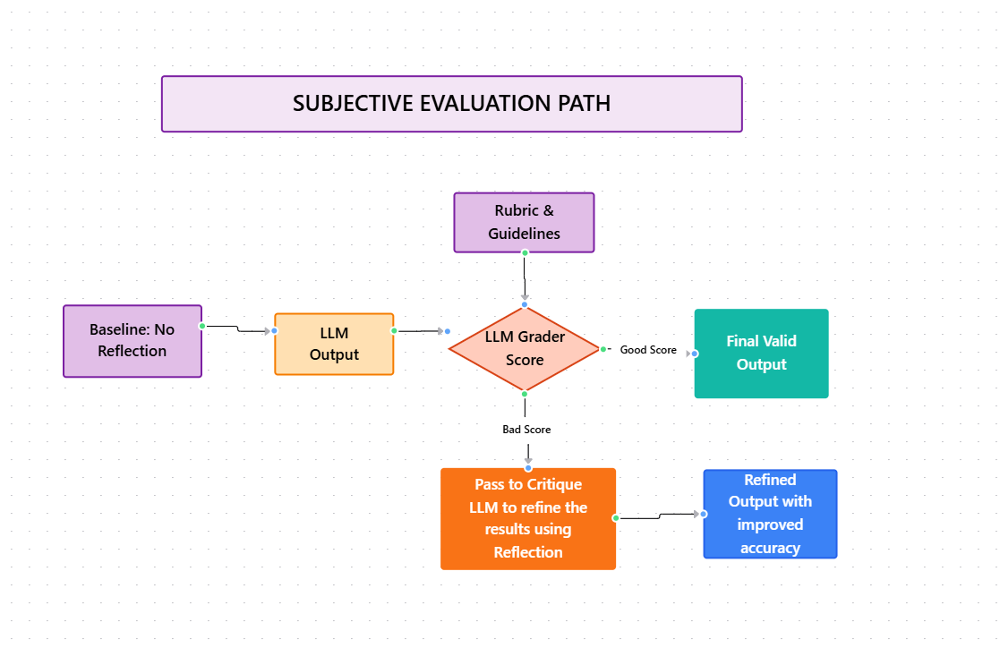

Module 2 — Episode 4
Training:Agentic AI Training
🎯 Learning Objectives
By the end of this episode, you will be able to:
- ✅ Design and implement evaluation (eval) workflows for reflection-based agentic systems
- ✅ Compare objective and subjective evaluation methods for LLM-driven tasks
- ✅ Identify bias and calibration issues when using LLMs as evaluators
- ✅ Use rubrics to improve consistency in subjective evaluation scenarios
🧭 Overview
This episode explores how to measure the effectiveness of reflection in agentic AI workflows.
You’ll learn how to evaluate whether reflection truly improves system performance, both in objective tasks (like database query generation) and subjective tasks (like visualization quality).
Understanding eval design is critical for systematically improving reflection prompts and maintaining reliable performance as your system evolves.
🧱 Prerequisites
Readers should already understand:
- The concept of reflection in agentic AI (from earlier episodes)
- How LLMs generate and refine outputs such as SQL queries or visualizations
- Basic familiarity with evaluation metrics and prompt engineering
🔑 Core Concepts
- Reflection Evaluation (Eval): A systematic process to measure whether reflection steps improve model outputs.
- Objective Evaluation: Quantitative assessment based on ground truth (e.g., correct vs. incorrect database query results).
- Subjective Evaluation: Qualitative assessment where correctness is ambiguous (e.g., determining which visualization “looks better”).
- LLM-as-a-Judge: Using a language model to compare or score outputs according to defined criteria.
- Rubric-Based Scoring: A structured method using binary or categorical criteria to increase consistency in subjective evaluations.
🖼 Visual Explanation
 
Caption:

Caption:
These diagrams illustrate objective evaluation (measuring correctness against ground truth) and subjective evaluation (using rubrics and LLM-based scoring) to assess reflection impact on workflow quality.
⚙️ Technical Breakdown
How It Works
1. Define Evaluation Dataset:Collect a set of prompts and known correct answers (for objective tasks) or sample outputs (for subjective tasks).
2. Run Baseline Workflow (No Reflection):Execute the system using only the first LLM’s output.
3. Run Reflection Workflow:Add a reflection step where a second LLM reviews and improves the initial output.
4. Compare Results:- For objective tasks: Measure the percentage of correct answers.
- For subjective tasks: Use an LLM grader or rubric-based scoring.
5. Iterate on Prompts:Adjust generation and reflection prompts, then re-run evals to quantify improvements.
Why It Works
Reflection introduces an iterative improvement mechanism, but its benefits must be empirically validated.
By measuring performance before and after reflection, developers can confirm whether additional reasoning steps yield measurable accuracy or quality gains.
Evals provide data-driven feedback loops, enabling systematic prompt optimization and model tuning.
When To Use It
✅ Ideal Scenarios:- When reflection steps add measurable improvement to structured outputs (SQL, code, etc.)
- When testing multiple prompt variations and needing objective feedback
- When refining subjective outputs such as visualizations, summaries, or designs
- The evaluation criteria are undefined or inconsistent
- The reflection step adds latency without measurable benefit
- LLM-as-a-judge results are too noisy or biased to trust
Trade-offs & Limitations
- Overhead: Reflection adds computational and latency costs.
- Bias: LLM judges may favor certain options due to position bias.
- Calibration: LLM scoring may be inconsistent without well-defined rubrics.
- Complexity: Managing both objective and subjective eval pipelines increases system complexity.
Performance Considerations
- Objective Evals: Can be automated and scaled easily for regression testing.
- Subjective Evals: Require careful rubric design and validation against human judgment.
- Prompt Sensitivity: Small changes in wording can significantly affect LLM-as-judge outcomes.
- Optimization: Binary rubric scoring (0/1 per criterion) tends to yield more stable results than 1–5 scales.
💻 Code Examples
Minimal Example — Objective Eval for Reflection
# Example: Evaluating reflection impact on SQL query accuracy
prompts = [
{"question": "Which color product has the highest total sales?", "ground_truth": "Blue"},
{"question": "How many items were sold in May 2025?", "ground_truth": "1301"},
]
def run_query(llm, question):
"""Generate and execute an SQL query using the given LLM."""
query = llm.generate_sql(question)
return execute_database_query(query)
def evaluate(llm_base, llm_reflect, prompts):
results = {"no_reflection": 0, "with_reflection": 0}
for p in prompts:
# Baseline
answer1 = run_query(llm_base, p["question"])
if answer1 == p["ground_truth"]:
results["no_reflection"] += 1
# Reflection-enhanced
initial_query = llm_base.generate_sql(p["question"])
improved_query = llm_reflect.improve_query(initial_query)
answer2 = execute_database_query(improved_query)
if answer2 == p["ground_truth"]:
results["with_reflection"] += 1
total = len(prompts)
print(f"No Reflection Accuracy: {results['no_reflection']/total:.2%}")
print(f"With Reflection Accuracy: {results['with_reflection']/total:.2%}")
# Example outcome:
# No Reflection Accuracy: 87%
# With Reflection Accuracy: 95%
Subjective Eval with Rubric Scoring
# Example: Evaluating visualization quality using rubric-based LLM grading
rubric = [
"Has a clear title",
"Axes are labeled",
"Appropriate chart type",
"Legends are readable",
"Colors are distinct"
]
def grade_plot(llm_judge, image):
"""Ask LLM to score plot based on binary rubric."""
scores = []
for criterion in rubric:
prompt = f"Does the plot satisfy this criterion? '{criterion}' Answer 1 for Yes, 0 for No."
score = int(llm_judge.evaluate_image(image, prompt))
scores.append(score)
return sum(scores)
# Compare reflection vs. non-reflection plots
baseline_score = grade_plot(llm_judge, baseline_plot)
reflected_score = grade_plot(llm_judge, reflected_plot)
print(f"Baseline Score: {baseline_score}/5")
print(f"Reflected Score: {reflected_score}/5")
🧩 Key Takeaways
- Reflection should be measured, not assumed to help.
- Use objective evals when ground truth exists and rubric-based evals for subjective tasks.
- LLMs as judges can be useful but require careful calibration.
- Binary rubric scoring improves consistency and reduces bias.
- Evals enable prompt iteration and systematic improvement of reflection workflows.
📘 Next Episode Preview
In the next and final episode of this module, we’ll explore how incorporating external information can significantly enhance reflection workflows — making them more robust and contextually accurate.